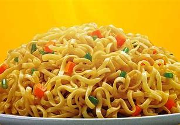

Pancit Canton Recipe

Pancit canton is a Pinoy dormer staple.
Ingredients
- Lucky Me! Pancit Canton flavor of choice
- water
- Optional: Egg
Steps:
- Bring water to a boil.
- Pour noodles to boiling water.
- Strain water from the noodles after 3 minutes.
- Pour packet contents to noodles.
- Serve.